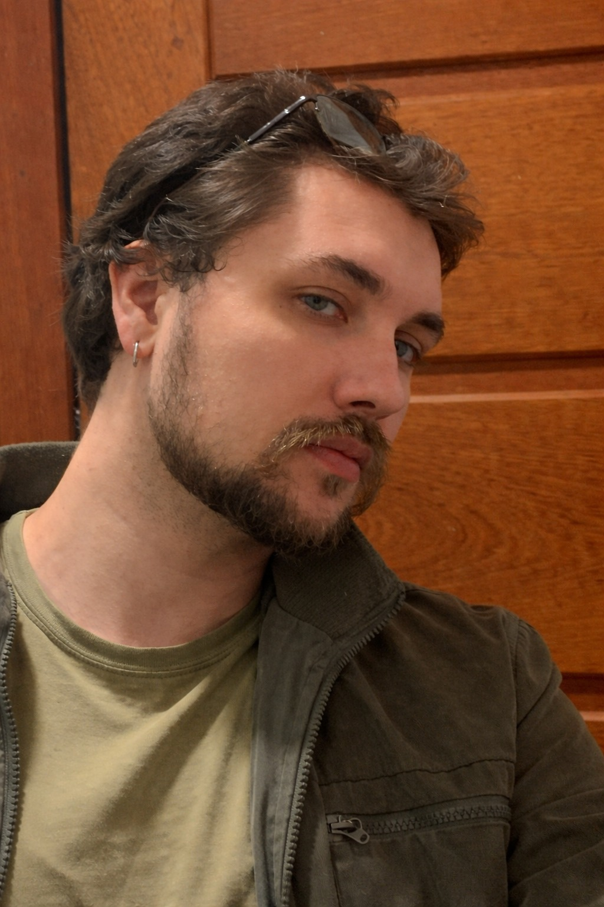

Me chamo João Eduardo, tenho 25 anos e atualmente estou cursando Análise e Desenvolvimento de Sistemas, no segundo período. Minha conexão com a tecnologia começou ainda na infância, quando a curiosidade me levou a explorar esse universo — e, com o tempo, essa curiosidade se transformou em uma verdadeira paixão pela programação.
Hoje, sigo em constante evolução como desenvolvedor, buscando construir uma base sólida e consistente. Tenho me dedicado ao aprendizado do Java, acreditando que dominar bem os fundamentos é o que sustenta um crescimento real e duradouro na área.
Gosto de desenvolver soluções que realmente fazem sentido no dia a dia, seja para resolver problemas práticos ou para tornar processos mais simples e eficientes. Para mim, programar não é apenas escrever código, mas criar algo útil, funcional e que tenha impacto.
Atualmente, meu foco está em continuar evoluindo tecnicamente, colocando em prática tudo o que aprendo e buscando oportunidades que me desafiem a crescer cada vez mais como desenvolvedor.
